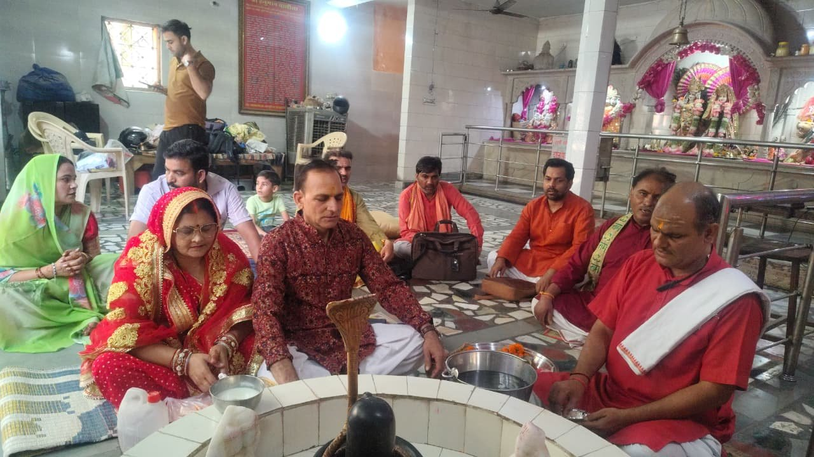

गृह प्रवेश व वास्तुलोकप्रिय
गृह प्रवेश व वास्तुलोकप्रियगृह प्रवेश पूजा
नए घर में प्रथम प्रवेश के समय गणेश पूजन, कलश स्थापना, नवग्रह पूजन, वास्तु पूजन और हवन। घर में सुख, शांति व समृद्धि के लिए।
विवरण देखें →

गृह प्रवेश, हवन, यज्ञ, संस्कार और ज्योतिष परामर्श। विद्वान पंडित जी आपके नाम-गोत्र से संकल्प लेकर सम्पूर्ण वैदिक विधि से अनुष्ठान कराएँगे।
🪔 करवा चौथ • संकष्टी चतुर्थी
पूजा चुनें, पैकेज चुनें और तिथि भरें — पंडित जी का मुहूर्त व विवरण हम फ़ोन पर पक्का करेंगे।
गृह प्रवेश व वास्तुलोकप्रियनए घर में प्रथम प्रवेश के समय गणेश पूजन, कलश स्थापना, नवग्रह पूजन, वास्तु पूजन और हवन। घर में सुख, शांति व समृद्धि के लिए।
 यज्ञ एवं हवनलोकप्रिय
यज्ञ एवं हवनलोकप्रियनौ ग्रहों की शांति हेतु वैदिक मंत्रों से पूजन व हवन। ग्रहों की प्रतिकूलता दूर करने के लिए।

यज्ञ एवं हवनलोकप्रियभगवान शिव के महामृत्युंजय मंत्र से जाप व हवन — आरोग्य, दीर्घायु और संकट निवारण हेतु।
 यज्ञ एवं हवनलोकप्रिय
यज्ञ एवं हवनलोकप्रिय कर्मकांड व संस्कारलोकप्रिय
कर्मकांड व संस्कारलोकप्रियपूर्णिमा, गृह प्रवेश, जन्मदिन या किसी भी शुभ अवसर पर भगवान सत्यनारायण की कथा एवं पूजन।
 दोष निवारणलोकप्रिय
दोष निवारणलोकप्रियजन्म कुंडली में कालसर्प योग होने पर राहु-केतु शांति, नाग पूजन व हवन।
 त्योहार पूजालोकप्रिय
त्योहार पूजालोकप्रियप्रदोष काल / स्थिर लग्न में घर या दुकान पर लक्ष्मी-गणेश, कुबेर व बही-खाता पूजन।

बड़े संकल्पों के लिए विद्वान पंडितों की टोली, सम्पूर्ण सामग्री और शास्त्रोक्त पूर्णाहुति — घर, मंदिर या आपके चुने स्थान पर।
अपनी आवश्यकता चुनें, उसके अनुसार उपयुक्त अनुष्ठान देखें।
सेवा व पैकेज — सामग्री सहित या बिना सामग्री।
नाम, गोत्र, पता और अपनी पसंद की तिथि।
पंडित जी पंचांग देखकर कॉल पर मुहूर्त व समय तय करेंगे।
पंडित जी नियत समय पर आपके घर या वीडियो कॉल पर।
इन तिथियों के लिए बुकिंग पहले से कर लें — पर्व के दिन पंडित जी की माँग अधिक रहती है।
हमारे अनुष्ठानों, हवन और संस्कारों की कुछ झलकियाँ।
“पूजा बुक करें” दबाएँ, पूजा चुनें और अपना नाम, मोबाइल नंबर व पता भरकर “बुकिंग भेजें” दबाएँ। हमारी टीम 2 घंटे के भीतर कॉल करके मुहूर्त, तिथि व दक्षिणा की जानकारी देगी।
“सामग्री सहित” पैकेज में सम्पूर्ण सामग्री हम लाते हैं। “सामान्य” पैकेज में हम आपको सामग्री सूची भेज देते हैं।
पंडित जी पंचांग व आपकी जन्म राशि देखकर शुभ मुहूर्त बताते हैं। यह बुकिंग में शामिल है।
हाँ। दिल्ली-एनसीआर के बाहर या विदेश में रहने वाले यजमान वीडियो कॉल पर संकल्प लेकर पूजा में शामिल हो सकते हैं।
बुकिंग पक्की होने पर अग्रिम राशि UPI से और शेष दक्षिणा पूजा के दिन दी जा सकती है।
पूजा से 48 घंटे पहले सूचना देने पर तिथि बदली जा सकती है या अग्रिम राशि लौटाई जाती है।
.jpg?width=700) 12 ज्योतिर्लिंग
12 ज्योतिर्लिंग अष्टविनायक
अष्टविनायक 51 शक्तिपीठ
51 शक्तिपीठ